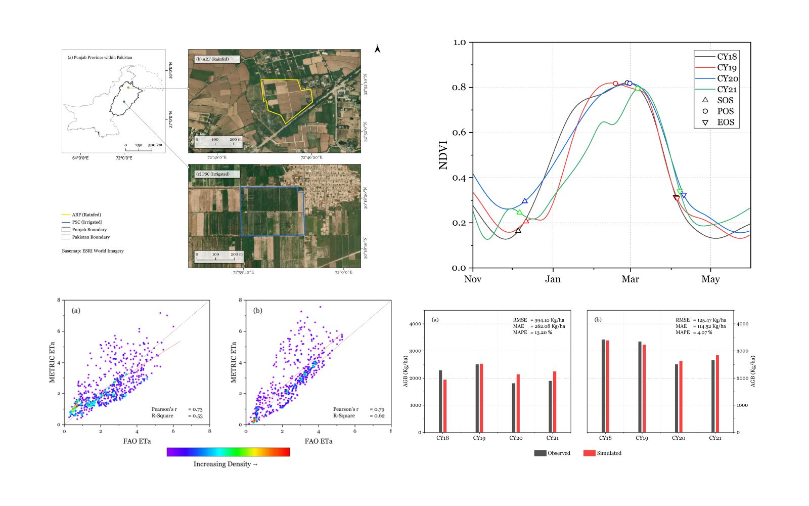

Satellite Data Assimilation for Wheat Yield Estimation
MSc Research
CropSyst
ET · LAI · Phenology
Satellite-derived LAI and actual evapotranspiration integrated with a process-based crop model for wheat biomass and yield estimation.
View project →